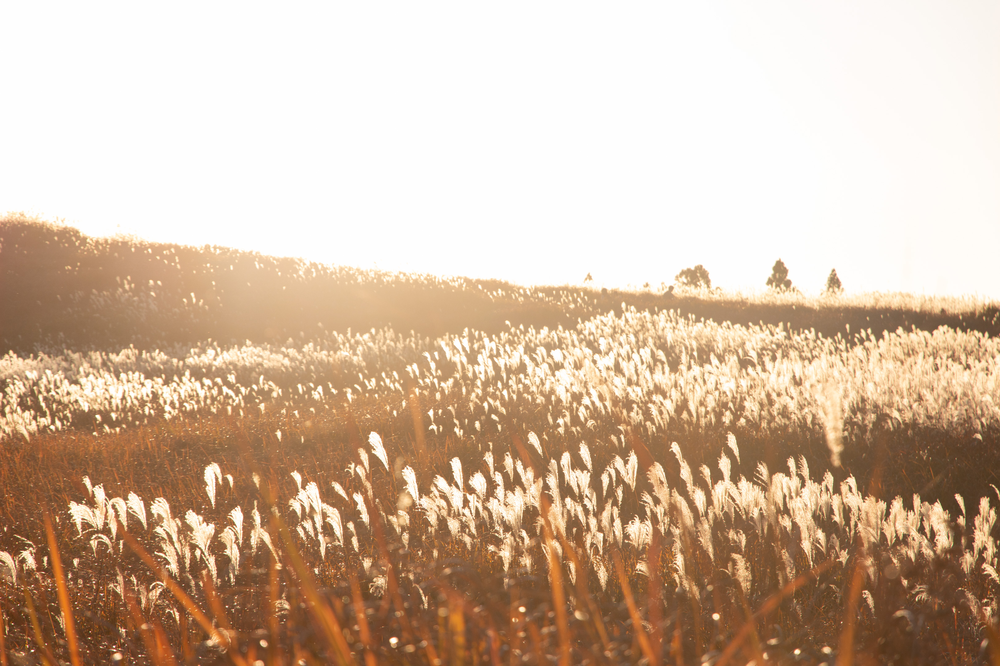

Profile
愛知県名古屋市出身、25歳。
趣味は一眼レフカメラを携えて旅をすることで、47都道府県を制覇しました。 その経験を伝えたいという想いから、旅先の情報を発信する個人ブログ「青春18きっぷ放浪記」を運営しています。
大学時代は建築を学び、企業・公共不動産を扱う研究室に所属。修士論文では統計学を利用して、コンパクトシティに対する住民の意識を分析しました。
その後は建築設計事務所に就職するも、ITの技術に惹かれ、プログラミングを学習。 Ruby on Railsを中心に、ITに関する基礎知識やwebアプリケーションの作成手順を学び、学習開始から2ヶ月半で、旅の計画を立てられるwebアプリ「trip diary」を作成しました。
趣味は一眼レフカメラを携えて旅をすることで、47都道府県を制覇しました。 その経験を伝えたいという想いから、旅先の情報を発信する個人ブログ「青春18きっぷ放浪記」を運営しています。
大学時代は建築を学び、企業・公共不動産を扱う研究室に所属。修士論文では統計学を利用して、コンパクトシティに対する住民の意識を分析しました。
その後は建築設計事務所に就職するも、ITの技術に惹かれ、プログラミングを学習。 Ruby on Railsを中心に、ITに関する基礎知識やwebアプリケーションの作成手順を学び、学習開始から2ヶ月半で、旅の計画を立てられるwebアプリ「trip diary」を作成しました。